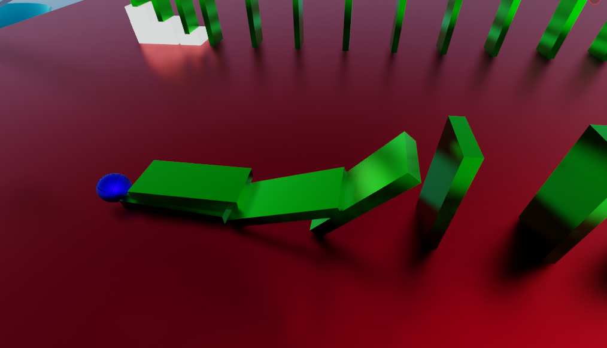
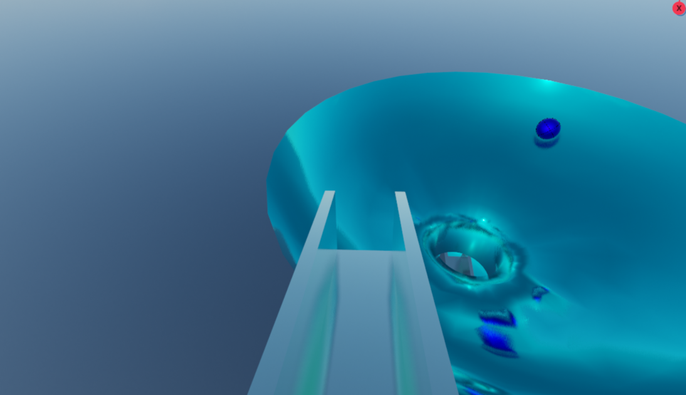

ピタゴラ装置
はじめに
今回は皆さんご存じ「ピタゴラスイッチ」のあの装置
…ぽいものをBlenderで作りました。
本当は3Dプリンターで実物を作りたかったのですが、時間の都合上、やむを得ずBlenderで動かすことになりました(最後の文化祭でもやらかす部長さん)。
まあそれはそれとして、ここからは作品の概要について説明します。
概要
この作品は、先ほど申し上げた通りピタゴラ装置(っぽいもの)をBlenderでアニメーションしたものです。

写真のように、ボールが坂道を下っていき… 
転がってきたボールに衝突したドミノが倒れていき… 
倒れたドミノにボールが衝突し、このように落下して終了
アニメーションの内容はこのようになっています。
総評
もう少し時間があったらもっといいのが作れたのかも…と、悔しさの残った作品となりました。
最後に
今年度で六甲生として作品を出すのは最後となりますが、これからも趣味の一環として、適当にBlenderで何か作っていこうかな…と思っています。
番外編
ちなみに、0x4Cはこんな動画を作りました。

もうね、これを2日で作られたときね、虚しくなったよね